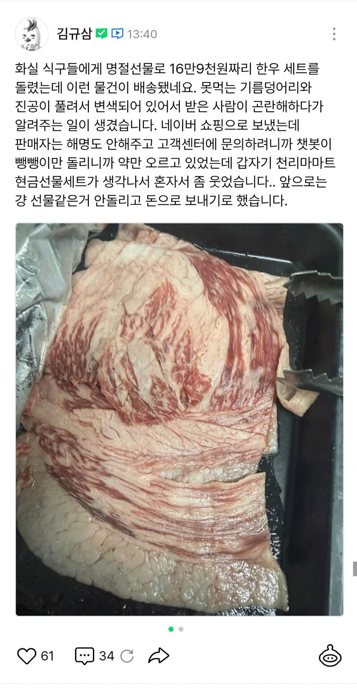
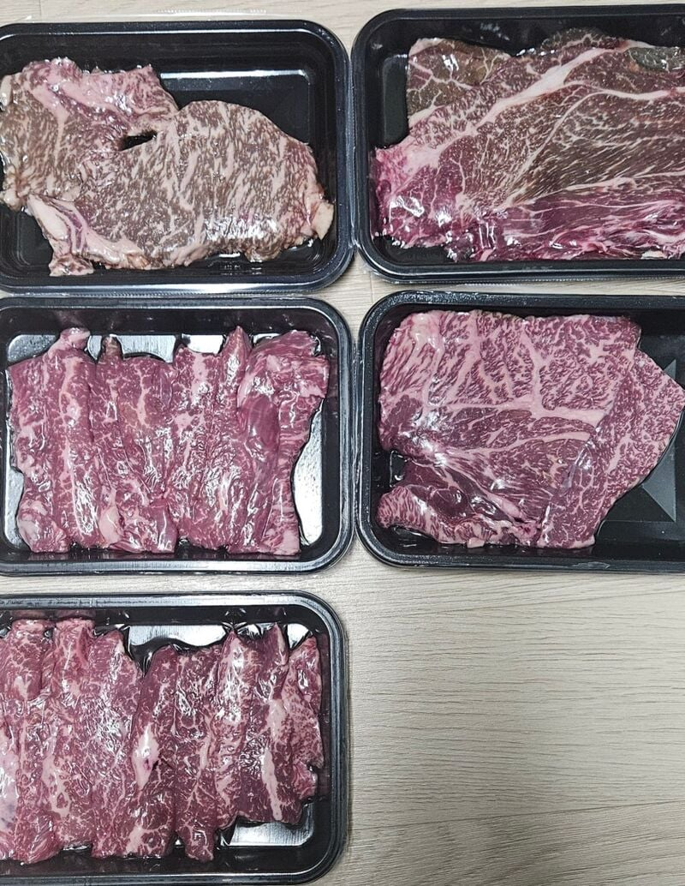
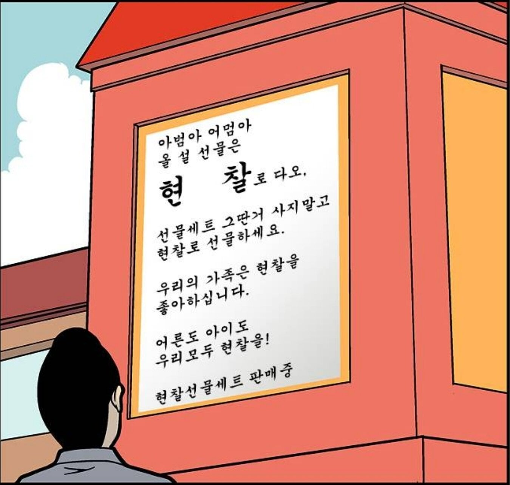
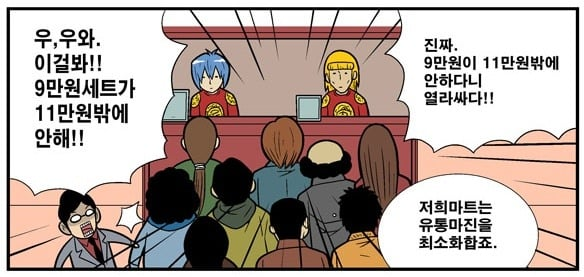

https://m.comic.naver.com/community/u/q3/posts/0-7booa-3j


천리마마트 현금선물세트


https://m.comic.naver.com/community/u/q3/posts/0-7booa-3j


천리마마트 현금선물세트
저런게 배송 될 수 있음
근데 제품에 하자가 있을때 백화점,마트,쿠팡등은 내가 결제한곳에 문의하면 되는데
네이버쇼핑은 우린 중개만 한거니까 판매한곳과 직접 연락하세요..하면서 빠져버리는게 제일 큰 문제
그걸 또 네이버공무원급 작가가 당했다는게 존나 아이러니하네 ㅋㅋㅋ
Q3정도면 이사진으로 가야지 ㅋㅋㅋ
맨위에거는 차돌인데 저건 정상맞음 물론 진공풀려서 병신처럼 될 수 는있는데 그건 유통과정에서 일어난 "사고"지 업체가 딱히 잘못한건 아님 , 물론 책임은 업체한테 있음. 아래고기는 뭐가 잘못이라는건 지 모르겠음. 고기안사봤나?
아래꺼는 단면부위 오래노출됐던애들 변색된거다
스킨포장이 풀리진 않은것 같은데
공기중에 오래 노출돼있었나봄
ㄴㄴ 니가 말한거 정반대임
고기끼리 맞닿은 부분은 공기가 차단되서 산소부족으로 갈변현상 생긴거임
전체적으로 변한거면 오히려 상한거라 의심가는데
저건 딱 갈변된부분위로 고기한덩이 더 올려져있던거임
산소차단은 색깔 저렇지않다...
고기 진짜 안사봤냐 저런거 포장 뜯으면 바로 빨개진다
ㅋㅋㅋㅋ그래
한우도 살자임?
이게 맞아. 진공포장 갈색 심하게 된 거 포장 뜯으면 붉게 됨
색이 다르다 색이
쟤는 깔이 갔다고 하는 애임
산소차단돼서 변색되는거랑 달라
산소차단은 검붉어지는거고
쟤는 갈색빛이 더 강함
그건 진짜 사진으론 구분 안된다. 당장 내가 좀전에 먹은 것도 저 갈색에서 색 돌아옴. 소고기 진공포장육으로 졸라 자주 시켜먹음. 사진 보정 따라 한 끝 차이고 결국 완전 녹색, 회색이거나 냄새 나는거 아니면 스킨포장 뜯을 때까진 모른다.
이따가 글써줄게 일하면서 사진몇개 찍어야겠다
나는 생산자입장이고 컴플레인도 들어오니까 많이겪어봤단말여
설명할 때 사진 보정까지 부탁한다. 난 저 아래 사진 아무리봐도 색조정 때문에 갈변 도드라져보이는 걸로 밖에 안보인다. 차돌박이 사진 보면 어차피 상했다고 냉장고 밖에 꺼내놓은 거 같은데 이러면 영영 진실은 안밝혀지겠지만 사진만 보고 판단은 섣부르다 생각한다. 너가 고인물이라 이런 건 사진으로 봐도, 조정이 안되어있어도 딱 알아요 하면 그건 진짜 내가 할 말은 없지. 너가 더 잘 아는게 맞으니까
그리고 업자면 차돌박이 의견이
진짜 궁금하다. 저건 진짜 잘 모르겠음. 평소 먹는 부위는 아닌거 같은데 애매함.
쿠팡 쓰는 이유
g환불하기 편해서?
묻지마 환불 ㅋㅋ
얼굴 안본다고 개판을 쳐놓네..
난 정상 범위다에 한표
위에는 단면이 차돌같은데 그러면 저게 맞고
아래는 갈변말하는거면 마트에서 진공포장된 소고기 안사봤나?
9만원세트 ㅋㅋㅋ
나도 전에 대구 처가에 과일세트를 보냈는데 .... 절반이 상한게 왔다고 하더라 ...
이후로는 그냥 현찰로 보내드림 ...
나는 이래서 차돌박이를 선물세트에 구성안한다
가격은 낮춰보일순있으나
받는사람마다 이해하는정도가 너무 차이가큼
냄새까지 나는거 아니면 뭐 정상범위
차돌도 팔뚝차돌 떼서 양지쪽으로 들어갔나보네 ㅋㅋ
보통 햄버거마냥 지방-고기-지방으로 돼있어야함
변색으로 보이는건 진공풀면 붉은색 돌아오지않나?
차돌도 지방 저정도인거는 하용범위같은데
ㅇㅇ 차돌이 저정도면 적은거 맞음. 다른 제품들도 정상이고.
명절선물은 백화점에서 사는게 여러모로 좋아요
모르면 걍 코스트코 가야지
평소에 고기 안먹나보네
네이버 쇼핑이면 해당업체에 문의하기나. 반품 환불하는 기능있지않나??
아직 스킨포장도 안뜯은것 같구만
정상범위인데????
킬동 연재 해줘잉
고기는 인터넷 말고, 코000나 0마트 같은 대형마트나 돈 좀 있으면 백화점 가는게 제일 좋슴다.
인터넷 구매는 반품이 되는 쿠0 추천이요.
귀찮으면 집앞 오래된 정육점도 좋구요~
차돌 안 먹어 봤나???
저 사진에서 진공 풀려서 변색은 무슨말이지
저거 갈색인거 진공 포장 뜯으면 다시 붉게 됨. 그게 안되면 불량이 맞는데 보통은 그럼. 진공포장된 육고기는 색 바리에이션이 있는데 포장 뜯으면 붉게 돌아온당
애미 씨발
차돌은 내가 싫어해서 잘 모르겠는데
일단 고기 포장된거 색 이상한건 포장 뜯어서 조금 지나면 원래색 돌아오는데
고기가 갈색이 되는건 오히려 진공이 잘 되어있어서 갈색이 되는거 아님? 내가 알기로는 오히려 신선한 것 한정으로 갈색인걸 포장 뜯어서 산소에 노출시켜주면 다시 선홍색 올라오는 걸로 아는데. 마트에서 진공 포장인데 선홍색인건 포장한지 얼마 안되서 그런거고, 저건 며칠 지나서 고기 내 산소 고갈로 갈변한거고. 도축부터 포장까지 시간이 얼마나 걸렸느냐에 따라서 저 고기가 여전히 신선할수도, 좀 바싹 구워먹어야 할수도 있겠지만, 개인적으로는 저 갈변한거 보다는 지방 덩어리로 온 고기를 중심으로 클레임을 거는게 맞지 않을까 싶음
진공포장이 돼야 갈변하는 거 아님?
공기중에 꺼내면 바로 빨개지던데
와........저거 차돌박이 같은대... 진짜 장난아니네...걍 기름덩어리르 보낸거야?
구매자가 그 정도 위험은 예상했어야 ㅉ.. 하는 내용임